Panajoti Rriska
Game Developer currently residing in Lodz(Poland)Games(Personal Projects)
2359-(Play it Online)--Made for the Cyberpunk Game Jam 2014 during the period of 3 days. FPS parkour game with dynamic music and puzzles 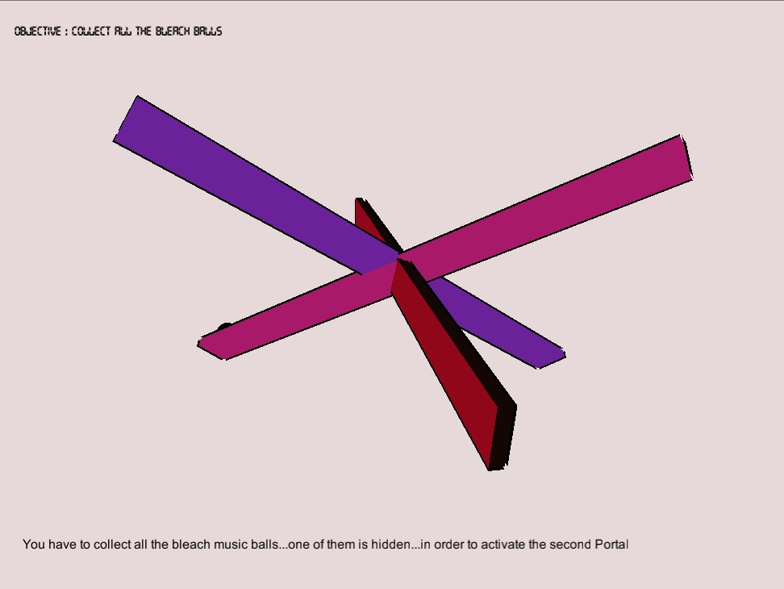
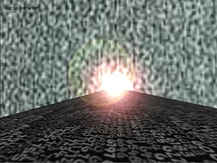
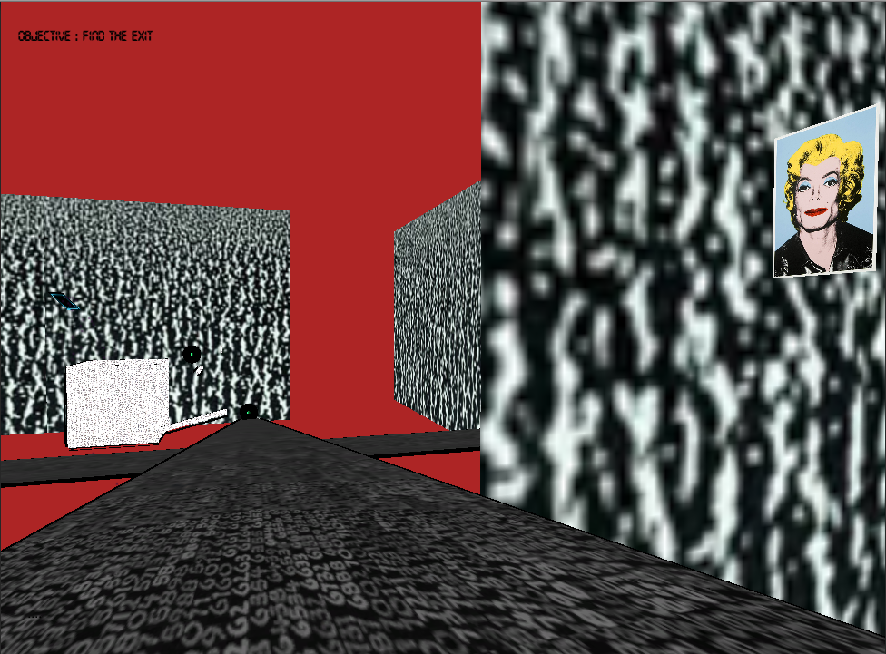
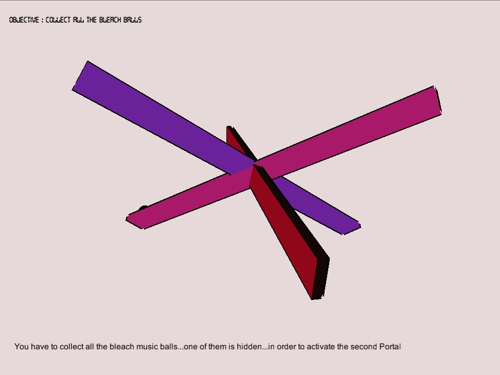
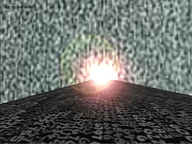
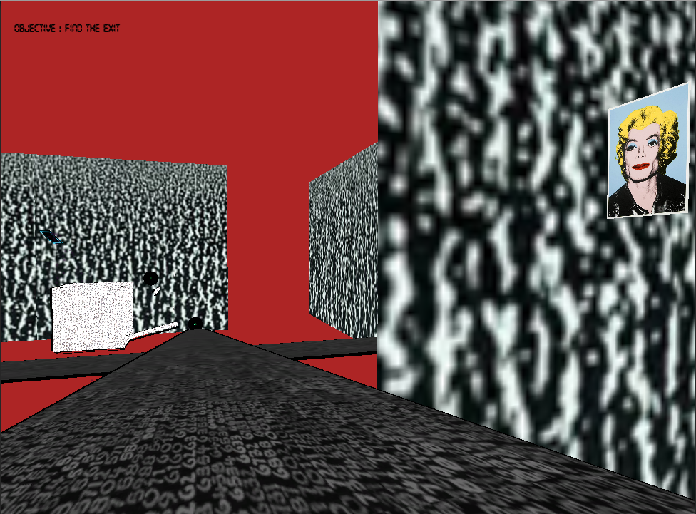
Puki-(Download PC build)-- 2D platform puzzle game with manipulation of time.(unfinished)
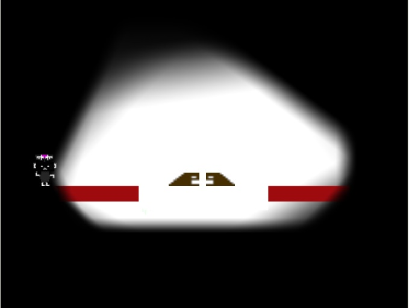 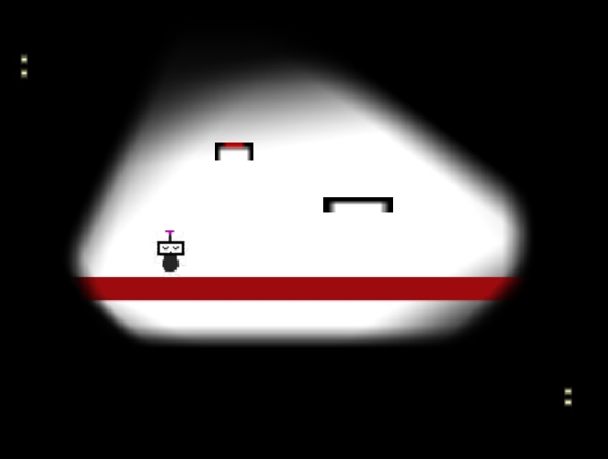 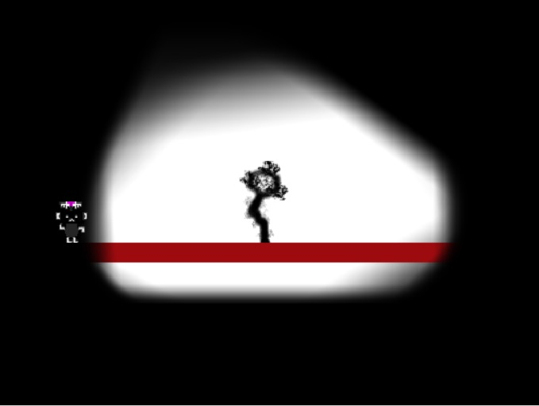
Factory 59-- Point n click adventure puzzle solving game based on the town I study and live(Lodz/Poland). It was done as a student project for my second year of studies during the period of 3 mounths in a group of 4 people
-Role: Story Director, Programming, Level Design, 2D Graphics , Sound
Download PC build
Games(Professional Projects)
Cracov 1500-- Using Unity to create a Rythmic Music Game in a Team of 3 programmers and 2 animators. Responsible for Gameplay Programming and Level Design(not released yet) 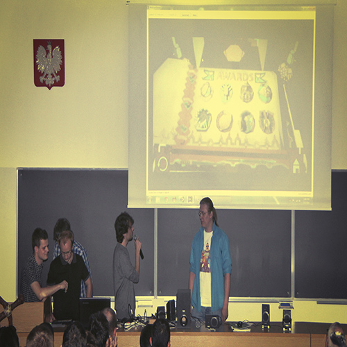
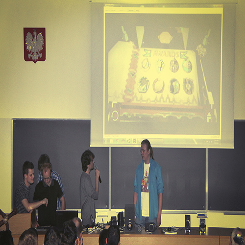

Sniper Tactical--Responsible as a programmer for implementing new tools and new control systems
Software Projects
Named Entity Recognisition-- A short presentation about my work on Named Entity Recognisition during my intership in Kosice(Slovakia) at the Technical University of Kosice using Python, Nltk and C++ during the period of 8 weeks.OpenGl 3d Terrain-- Using OpenGl with C++ to create 3D terrain applying textures and testing lighting and geometrical transformation. Also testing movemnt of character in FPS view
Image Processing-- Using OpenCV with C++ to explore different capabilities such as applying Fourier Transform and Frequency Analysis on different images
DataBase Calendar-- Using Java and Sqlite with NetBeans(for creation of GUI) to create a Calendar which is connected with a Database and checks users and events
Skills
Languages: Greek, English, Polish, Albanian .Code: C, C++, C#, Java, Python, HTML .
Code Software and Repository tools: Visual Studio, NetBeans, Eclipse, CodeBlocks, TortoiseSVN, Perforce.
Multimedia Software: Photoshop, Illustrator, FL Studio .
Game Engines/Frameworks/APIs: Unity, XNA, Gamemaker Studio, Wintermute Engine, OpenGL .
Contact Information
Email: panoslennon@gmail.comTwitter: @panoslennon